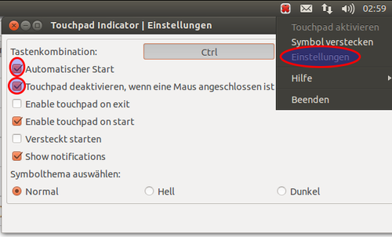
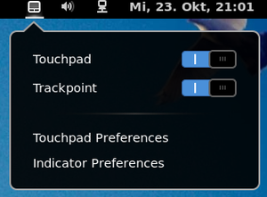

Touchpad
Dieser Artikel wurde für die folgenden Ubuntu-Versionen getestet:
Ubuntu 17.10 Artful Aardvark
Ubuntu 14.04 Trusty Tahr
Zum Verständnis dieses Artikels sind folgende Seiten hilfreich:
Touchpads funktionieren unter Ubuntu im Regelfall anstandslos. Mit dem Synaptics-Treiber steht für beliebige Touchpads sogar ein mächtiges Instrument zur Verfügung, mit dem sich die unterschiedlichsten Funktionen ein- und ausstellen lassen. Die Einrichtung erfolgt in der Regel über udev-Regeln in den xorg.conf.d-Dateien oder die grafische Betriebssystem-Oberfläche.
Vorbereitung¶
Voraussetzung für das Betreiben eines beliebigen Touchpads ist die Installation [1] des X.org-Treibers, der bei der Installation von Ubuntu automatisch installiert worden sein sollte:
xserver-xorg-input-synaptics
 mit apturl
mit apturl
Paketliste zum Kopieren:
sudo apt-get install xserver-xorg-input-synaptics
sudo aptitude install xserver-xorg-input-synaptics
Ab Ubuntu 17.04 wird statt synaptics libinput verwendet:
xserver-xorg-input-libinput
mit apturl
Paketliste zum Kopieren:
sudo apt-get install xserver-xorg-input-libinput
sudo aptitude install xserver-xorg-input-libinput
Einrichtung¶
Der synaptics-Treiber ermöglicht eine sehr detaillierte Konfiguration der Parameter. Eine Beschäftigung damit ist nur dann empfehlenswert, wenn man mit den Konfigurationsmöglichkeiten der grafischen Oberfläche nicht zufrieden ist oder das Touchpad nicht wie gewünscht funktioniert.
Ab Ubuntu 17.04¶
Die folgenden Schritte gelten lediglich für den synaptics-Treiber, ab 17.04 funktionieren sie aufgrund der libinput-Bibliothek nicht mehr. Eine Anleitung, wie sich die Einstellungen trotzdem ändern lassen, findet sich beispielsweise auf ubuntuvibes.com  .
.
Vor 17.04¶
Die Konfiguration wird über udev vorgenommen. Dieser Artikel gibt einen kleinen Überblick über die möglichen Parameter. Ausführlich erklärt werden sie im Handbuch von synaptics. Man kann außerdem im Terminal [2] mit synclient und evtest experimentieren.
udev¶
Standardmäßig werden die Einstellungen für das Touchpad (unter anderem) aus der Datei /usr/share/X11/xorg.conf.d/50-synaptics.conf geladen. Für eine manuelle Konfiguration sollte eine Kopie dieser Datei mit anderem Namen angelegt werden.
Die Kopie kann im Terminal [2] mit dem folgenden Befehl angelegt werden.
sudo cp /usr/share/X11/xorg.conf.d/50-synaptics.conf /usr/share/X11/xorg.conf.d/51-synaptics-userdefined.conf
Der Dateiname kann bis auf zwei Dinge frei gewählt werden:
Die Zahl am Anfang sollte größer als 50 sein, damit die Datei nach der 50-synaptics.conf geladen wird
Der Dateiname muss mit .conf enden
Die neue Datei kann nun mit einem Editor [3] mit Root-Rechten [6] geöffnet werden. Gebraucht wird nur ein Block der Section "InputClass". Alles andere kann gelöscht werden. Der prinzipielle Aufbau ist wie im folgenden Beispiel:
1 2 3 4 5 6 7 8 9 10 | Section "InputClass" Identifier "touchpad catchall" Driver "synaptics" MatchIsTouchpad "1" MatchDevicePath "/dev/input/event*" Option "LeftEdge" "1600" Option "RightEdge" "5400" Option "TopEdge" "1500" Option "BottomEdge" "4500" EndSection |
Die Option-Parameter sind nach den eigenen Bedürfnissen anzupassen.
Hinweis:
Wenn nicht die originale Touchpad-Treiberkonfiguration überschrieben, sondern wie empfohlen mit einer Kopie gearbeitet wird, ist es evtl. besser, MatchDriver "synaptics" statt Driver "synaptics" zu verwenden. Die Verwendung von MatchDriver ist auf jeden Fall erforderlich, wenn nicht auch MatchIsTouchpad "1" und MatchDevicePath ... verwendet werden. Andernfalls überschreibt man sich auch andere Eingabe-Treiber, insbesondere den Tastatur-Treiber!
Unter Gnome und Cinnamon kann es erforderlich sein, den gnome settings deamon zu deaktivieren, um das Überschreiben der Einstellungen zu verhindern. Er kann deaktiviert werden mittels:
Ausführen von dconf-editor
Bearbeiten von "/org/gnome/settings-daemon/plugins/mouse/" bzw. "/org/cinnamon/settings-daemon/plugins/mouse/" bei cinnamon
Haken bei "Active" entfernen
Parameter¶
Eine komplette Übersicht und Erklärung der Parameter kann im Handbuch von synaptics nachgeschlagen werden. Im Folgenden eine Übersicht:
Grundeinstellungen¶
| Option | Typ | Verhalten |
| Device | TEXT | Die Gerätedatei: Automatische Erkennung (Standard) oder Pfad (wird ignoriert, wenn als Protokoll "auto-dev" verwendet wird). |
| Protocol | TEXT | Das zu verwendende Protokoll: "autodev" (Standard), "psaux" (Rohdaten) oder "event" (Kernel-Events). |
| SHMConfig | 1 / 0 | Nur bei Ubuntu 12.04: Aktiviert die Möglichkeit, das Touchpad im laufenden Betrieb zu konfigurieren. |
Tapping und Klick-Verhalten¶
| Option | Typ | Verhalten |
| FingerHigh | Ganze Zahl | Gibt den Schwellenwert an, ab wann eine Berührung als Druck erkannt wird. |
| PalmDetect | 1 / 0 | Erkennt versehentliches Tippen mit der Handfläche als ungültig. |
| MaxTapTime | Ganze Zahl | Gibt in Millisekunden an, wie lange eine Berührung sein darf, um als Klick erkannt zu werden. Der Wert "0" schaltet Klicks mit dem Touchpad selbst ganz ab. |
| MaxTapMove | Ganze Zahl | Gibt an, wie weit sich eine Berührung bewegen darf, um als Klick erkannt zu werden. |
| MaxDoubleTapTime | Ganze Zahl | Gibt in Millisekunden an, wie lange zwei Berührungen nacheinander sein dürfen, um als Doppelklick erkannt zu werden. |
| TapButton1 | Ganze Zahl | Gibt an, welcher Mausbutton beim Tippen mit einem Finger in die Mitte des Touchpads ausgelöst wird (Analog für zwei oder drei Finger mit TapButton2 bzw. TapButton3). |
| CornerCoasting | 1 / 0 | Ein Element verschieben, indem ein Finger die Ecke geklickt hält und der andere auf dem Touchpad bewegt wird. |
Hot Corners¶
Einige Touchpads verfügen über sogenannte Hot Corners, mit denen Mausbuttons auf den vier Ecken des Geräts ausgelöst werden können. Der Wert 0 deaktiviert das Verhalten.
| Option | Typ | Verhalten |
| LBCornerButton | Ganze Zahl | Gibt an, welcher Mausbutton durch Tippen in die linke unteren Ecke ausgelöst wird. |
| LTCornerButton | Ganze Zahl | Gibt an, welcher Mausbutton durch Tippen in die linke obere Ecke ausgelöst wird. |
| RBCornerButton | Ganze Zahl | Gibt an, welcher Mausbutton durch Tippen in die rechten unteren Ecke ausgelöst wird. |
| RTCornerButton | Ganze Zahl | Gibt an, welcher Mausbutton durch Tippen in die rechten obere Ecke ausgelöst wird. |
Cursor-Geschwindigkeit¶
| Option | Typ | Verhalten |
| MinSpeed | Gleitkommazahl | Stellt die Minimalgeschwindigkeit des Zeigers ein. |
| MaxSpeed | Gleitkommazahl | Stellt die Maximalgeschwindigkeit des Zeigers ein |
| AccelFactor | Gleitkommazahl | Stellt die Beschleunigung von Minimalgeschwindigkeit zu Maximalgeschwindigkeit ein |
Scrollen¶
| Option | Typ | Verhalten | |
| VertTwoFingerScroll | 1 / 0 | Aktiviert das vertikale Scrollen mit zwei Fingern auf dem Touchpad. | Hinweis: Wenn diese Optionen aktiviert sind, sollten VertEdgeScroll und HorizEdgeScroll sinnvoller Weise deaktiviert sein. |
| HorizTwoFingerScroll | 1 / 0 | Aktiviert das horizontale Scrollen mit zwei Fingern auf dem Touchpad. | |
| VertEdgeScroll | 1 / 0 | Aktiviert die Nutzung des rechten Randes als vertikalen Scrollbalken. | Hinweis: Wenn diese Optionen aktiviert sind, sollten VertTwoFingerScroll und HorizTwoFingerScroll sinnvoller Weise deaktiviert sein. |
| HorizEdgeScroll | 1 / 0 | Aktiviert die Nutzung des unteren Randes als horizontalen Scrollbalken. | |
| VertScrollDelta | Ganze Zahl | Legt fest, ab welcher Distanz in vertikaler Richtung eine Bewegung als Scrollen anerkannt wird. | |
| HorizScrollDelta | Ganze Zahl | Legt fest, ab welcher Distanz in horizontaler Richtung eine Bewegung als Scrollen anerkannt wird. | |
| CircularScrolling | 1 / 0 | Aktiviert kreisförmiges Scrollen. | |
| CircScrollTrigger | Ganze Zahl | Legt fest, wo das kreisförmige Scrollen begonnen werden muss. 0 Alle Seiten und Ecken; 1 Obere Seite; 2 Obere, rechte Ecke; 3 Rechte Seite; 4 Untere, Rechte Ecke; 5 Untere Seite; 6 Untere, Linke Ecke; 7 Linke Seite; 8 Obere, Linke Ecke | |
Die Scroll-Einstellungen für Firefox finden sich in Firefox/Mausfunktionen.
ClickPad¶
ClickPads sind Touchpads mit sogenannten integrierten SoftButtons, auf denen ein physikalischer Klick erfolgen kann.
| Option | Typ | Verhalten | |
| ClickPad | 1 / 0 | Aktiviert die ClickPad-Funktionalität (muss vom Treiber unterstützt werden) | |
| SoftButtonAreas | "RL RR RT RB ML MR MT MB" | Gibt den Bereich der SoftButtons in ganzen Zahlen an, wobei der erste Buchstabe für R=Rechtsklick oder M=Mittelklick und der zweite für L=Links, R=Rechts, T=Oben und B=Unten steht. | |
| HasSecondarySoftButtons | 1 / 0 | Aktiviert den sekundären SoftButtons-Bereich des ClickPads | |
| SecondarySoftButtonAreas | "RL RR RT RB ML MR MT MB" | Gibt den Bereich der sekundären SoftButtons in ganzen Zahlen an (analog zu SoftButtonAreas) | |
Synclient¶
Das Programm synclient dient zur Konfiguration des Touchpads zur Laufzeit. Für die Verwendung wird bei Ubuntu 12.04 SHM benötigt. Es ist zu beachten, dass synclient nicht alle Optionen kennt, die per udev-Regel genutzt werden können (Bsp: HasSecondarySoftButtons). Außerdem kann es passieren, dass es bei der Konfiguration durch synclient zu merkwürdigem Verhalten kommt, was bei der Konfiguration per udev-Regel nicht passiert. Synclient kann über ein Terminal [2] mit verschiedenen Parametern aufgerufen werden. Beispiele:
Auflisten aller Parameter:
synclient -l
Editieren eines Parameters:
synclient AccelFactor=0.15
evtest¶
Das Programm evtest kann genutzt werden, um sich Informationen über Ereignisse anzeigen zu lassen, die das Touchpad auslöst. Das ist bspw. nützlich, um die Koordinaten verschiedener Punkte auf dem Touchpad zu ermitteln.
evtest
mit apturl
Paketliste zum Kopieren:
sudo apt-get install evtest
sudo aptitude install evtest
Es wird im Terminal [2] mit Root-Rechten [6] gestartet:
sudo evtest
Es wird eine Liste verschiedener Geräte angezeigt, woraus man per Eingabe der Nummer das Touchpad auswählt. Danach werden einem live alle Ereignisse angezeigt, die das Touchpad auslöst, inklusive der zugehörigen Koordinaten. Beendet werden kann das Programm mit dem Kürzel Strg + C .
Grafische Einstellungen¶
Unity/GNOME 3¶
Siehe GNOME3 Systemeinstellungen.
Pointing devices¶
Weitere Einstellungsmöglichkeiten bietet das Programm gpointing-device-settings, der Nachfolger des früheren gsynaptics.
KDE¶
Unter KDE stehen sowohl die internen Einstellungen als auch das Programm synaptiks zur Konfiguration des Touchpads zur Verfügung. Damit lassen sich die wichtigsten Einstellungen für das Touchpad treffen. Synaptiks startet man z.B. in einem Terminal:
synaptiks
synaptiks zeigt alle aktuell angeschlossenen Mäuse an und bietet die Möglichkeit, einzelne Mäuse für die automatische Deaktivierung des Touchpads zu ignorieren. Damit kann man den eingebauten Trackball, Trackpoint oder ähnliches, der als Maus identifiziert wird, ausschließen. Tut man dies nicht, wird das Touchpad permanent deaktiviert, was durchaus gewünscht sein kann.
Xfce¶
Hier nutzt man den Einstellungsmanager von Xfce.
LXDE¶
Keine integrierte Einstellungsmöglichkeit vorhanden. Bei Bedarf können gpointing-device-settings oder syndaemon verwendet werden.
Problembehebung¶
Falls in einer der graphischen Oberflächen die Einstellmöglichkeiten deaktiviert sind und stattdessen Fehlermeldungen angezeigt werden (Treiber nicht installiert, X Shared Memory nicht aktiviert), wurde möglicherweise bei Verwendung von Ubuntu 12.04 "SHMConfig" nicht auf "1" gesetzt (s.o.) oder der Treiber unterstützt das Touchpad (noch) nicht.
Touchpad ein- und ausschalten¶
Mit der Hilfe von syndaemon¶
Touchpad beim Schreiben deaktivieren¶
Am Praktischsten ist es, das Touchpad nur während des Schreibens auf der Tastatur zu deaktivieren.
Durch folgenden Befehl kann man das Touchpad während des Schreibens deaktivieren:
syndaemon -i 2 -d #option -i gibt die Sperrzeit in Sekunden an (dezimale Angaben für <1.0s sind möglich) #falls hier eine Fehlermeldung erscheint, zusätzlich die Option -S verwenden
Bei Erfolg kann man das auch automatisch bei der Anmeldung geschehen lassen [4].
Tapping des Touchpads beim Schreiben deaktivieren¶
Eine nicht so restriktive aber möglicherweise effizientere Variante ist, das Tapping, also Mausklicks, die durch doppelte Berührung des Touchpads ausgelöst werden, während des Schreibens auf der Tastatur zu deaktivieren. So kann man trotzdem schnell zwischen Tastatur und Touchpad wechseln und genauso komfortabel wie gewohnt arbeiten. Der dazu benötigte Parameter ist:
syndaemon -i 2 -d -t #option -i gibt die Sperrzeit in Sekunden an #option -t deaktiviert das Tapping
Touchpad mit Tastenkürzel ein- und ausschalten¶
Voraussetzung ist, dass folgende Pakete installiert sind [1]:
xbindkeys (universe)
libnotify-bin (universe)
mit apturl
Paketliste zum Kopieren:
sudo apt-get install xbindkeys libnotify-bin
sudo aptitude install xbindkeys libnotify-bin
Nun wechselt man ins Verzeichnis /usr/local/bin/ und erstellt mit einem Editor [3] und Root-Rechten [6] die Datei touchpad.py. Der Befehl lautet dazu:
sudo [Editorname] touchpad.py
In die leere Datei fügt man Folgendes ein:
1 2 3 4 5 6 7 8 9 10 11 12 13 14 15 16 17 18 19 20 21 22 23 24 25 26 27 28 29 30 31 32 33 34 35 | #!/usr/bin/python # -*- coding: utf-8 -*- # Benötigt libnotify-bin sowie SHMConfig (unter Ubuntu 12.04) import subprocess import shlex def read_touchpad_config(): proc = subprocess.Popen(['synclient', '-l'], stdout=subprocess.PIPE) config = {} for i, line in enumerate(proc.stdout): # remove first line, which does only contain a headline if i == 0: continue key, _, value = shlex.split(line) config[key] = value return config def toggle_touchpad_state(current_state): subprocess.call(['synclient', 'TouchpadOff=%i' % (not current_state)]) def send_notify(): config = read_touchpad_config() if config['TouchpadOff'] == '1': subprocess.Popen(['notify-send', 'Touchpad', 'Das Touchpad wurde ausgeschaltet', '-t', '2000']) else: subprocess.Popen(['notify-send', 'Touchpad', 'Das Touchpad wurde eingeschaltet', '-t', '2000']) def main(): config = read_touchpad_config() toggle_touchpad_state(config['TouchpadOff'] == '1') send_notify() if __name__ == '__main__': main() |
Danach speichert man die Änderung. Nun muss die Datei nur noch ausführbar gemacht werden. Das geht mit dem Befehl:
sudo chmod 755 touchpad.py
Anschließend kann man über das Tastaturkürzelmenü [Systemeinstellungen; Tastatur; Tastaturkürzel] ein Tastaturkürzel mit dem Befehl /usr/local/bin/touchpad.py hinzufügen und ihm eine Tastenkombination zuordnen.
Abschalten des Touchpads ohne Synaptics-Treiber¶
Bei sehr neuen Laptops und 2in1s kann es vorkommen, dass nur eine Unterstützung via udev geboten wird, da der Synaptics-Treiber nicht geladen werden kann. In dem Fall besteht die Möglichkeit, das Touchpad direkt über den X-Server zu deaktivieren. Mittels des folgenden Bash-Scripts läßt sich dieser Vorgang automatisieren und wie eben beschrieben an ein Tastenkürzel binden.
1 2 3 4 5 6 7 8 9 10 | #!/bin/bash touchpadstatus=$(xinput list-props 'Synaptics Touch Pad V 103u5' | grep -i enabled | sed -e "s/Device Enabled ([0-9]*)://" | sed -e 's/^[ \t]*//') if [ $touchpadstatus -eq 1 ] ; then notify-send -i /usr/share/icons/gnome/scalable/devices/input-touchpad-symbolic.svg 'Touchpad' 'Touchpad wird deaktiviert!' xinput --disable 'Synaptics Touch Pad V 103u5' else notify-send -i /usr/share/icons/gnome/scalable/devices/input-touchpad-symbolic.svg 'Touchpad' 'Touchpad wird aktiviert!' xinput --enable 'Synaptics Touch Pad V 103u5' fi |
Im Skript wird nach dem Touchpad "Synaptics Touch Pad V 103u5" gesucht. Dieser Bezeichner muss an das jeweilige Gerät angepasst werden. Den korrekten Namen erhält man mit folgendem Befehl:
xinput
Ausgabe:
⎡ Virtual core pointer id=2 [master pointer (3)]
⎜ ↳ Virtual core XTEST pointer id=4 [slave pointer (2)]
⎜ ↳ Synaptics Touch Pad V 103u5 id=11 [slave pointer (2)]
⎜ ↳ ELAN Touchscreen id=12 [slave pointer (2)]
⎣ Virtual core keyboard id=3 [master keyboard (2)]
↳ Virtual core XTEST keyboard id=5 [slave keyboard (3)]
↳ Power Button id=6 [slave keyboard (3)]
↳ Video Bus id=7 [slave keyboard (3)]
↳ Power Button id=8 [slave keyboard (3)]
↳ HP TrueVision Full HD id=9 [slave keyboard (3)]
↳ HP TrueVision Full HD Rear id=10 [slave keyboard (3)]
↳ AT Translated Set 2 keyboard id=13 [slave keyboard (3)]
↳ HP Wireless hotkeys id=14 [slave keyboard (3)]
↳ HP WMI hotkeys id=15 [slave keyboard (3)]Touchpad in Abhängigkeit einer Maus ein- und ausschalten¶
Um auf Änderungen an der Hardware reagieren zu können, muss eine Regel für udev geschrieben werden. Dazu wird die Datei /etc/udev/rules.d/01-touchpad.rules erstellt. Die Datei danach mit einem Editor und Root-Rechten öffnen.
Folgende Regel veranlasst udev dazu, das Touchpad mit Hilfe des Programmes synclient zu aktiveren, wenn eine Maus abgesteckt bzw. zu deaktivieren, wenn eine Maus angeschlossen wird. Hierzu sollte/muss gpointing-device-settings installiert sein/werden.
ACTION=="remove", SUBSYSTEM=="hid", RUN+="/sbin/modprobe psmouse" ACTION=="add", SUBSYSTEM=="hid", RUN+="/sbin/rmmod psmouse"
Siehe hierzu auch o-o-s.de . Dies in die Datei einfügen und abspeichern. Die Regel wird sofort aktiv, sobald das nächste Mal eine Maus an- oder abgesteckt wird. Nun muss man noch unter GNOME 2 über "System -> Einstellungen -> Pointing devices" im Reiter "Allgemein" bei abgezogener Maus unter "Guest Mouse" das Häkchen bei "Set guest mouse off" entfernen, damit das Touchpad schon beim Systemstart und angesteckter Maus deaktiviert ist. Dies gilt für Synaptics-Touchpads.
Automatische Touchpad-Verwaltung¶
Unity¶

Wenn Unity verwendet wird, dann kann man den Touchpad-indicator benutzen. Dazu muss zuerst ein "Personal Package Archiv" (PPA) hinzugefügt werden.
Adresszeile zum Hinzufügen des PPAs:
ppa:atareao/atareao
Hinweis!
Zusätzliche Fremdquellen können das System gefährden.
Ein PPA unterstützt nicht zwangsläufig alle Ubuntu-Versionen. Weitere Informationen sind der  PPA-Beschreibung des Eigentümers/Teams atareao zu entnehmen.
PPA-Beschreibung des Eigentümers/Teams atareao zu entnehmen.
Damit Pakete aus dem PPA genutzt werden können, müssen die Paketquellen neu eingelesen werden.
Nach dem Aktualisieren der Paketquellen kann folgendes Paket installiert werden:
touchpad-indicator (ppa)
mit apturl
Paketliste zum Kopieren:
sudo apt-get install touchpad-indicator
sudo aptitude install touchpad-indicator
Dann startet man das Programm in einem Terminalfenster:
touchpad-indicator
Anschließend auf das Tochpad-Symbol mit rechter Maustaste draufklicken und dann Einstellungen anklicken. Hier nun einen Haken bei "Automatischer Start" und "Touchpad deaktivieren, wenn eine Maus angeschlossen ist" hinzufügen.
GNOME Shell¶

Für die GNOME Shell existieren die Erweiterungen Touchpad Indicator und Toggle Touchpad .
Skript-Lösung¶
Wenn das Touchpad automatisch beim Anschließen einer Maus ausgeschaltet und beim Entfernen der Maus wieder eingeschaltet werden soll, lassen sich dazu diese Skripte verwenden.
Problembehebungen¶
Identifikation¶
Ist das verbaute Touchpad-Modell nicht bekannt, kann man dies in einem Terminal ermitteln [2]:
grep -B 5 mouse /proc/bus/input/devices
Erscheint u.a. folgende Ausgabe, besitzt das Gerät ein Synaptics-Touchpad:
I: Bus=0011 Vendor=0002 Product=0007 Version=0000 N: Name="SynPS/2 Synaptics TouchPad"
Wird ähnliches wie in folgendem Textfeld ausgegeben, ist ein Alps-Touchpad verbaut:
I: Bus=0011 Vendor=0002 Product=0008 Version=6337 N: Name="AlpsPS/2 ALPS GlidePoint"
Sollten nur allgemeine Mauseinträge und insbesondere lediglich ein Eintrag "PS/2 Generic Mouse", jedoch kein spezifischer Touchpad-Block angezeigt werden, so wird das Touchpad offenbar nicht automatisch erkannt. Bei den Modellen "ETPS/2 Elantech Touchpad" und "PS/2 Elantech Touchpad" ist das psmouse-Modul neu zu laden. In einem Terminal folgendes eingeben:
sudo modprobe -r psmouse sudo modprobe psmouse proto=imps
Jetzt sollte das Touchpad zunächst funktionieren. Für eine dauerhafte Lösung sollte man folgenden Eintrag in einer anzulegenden Datei /etc/modprobe.d/psmouse.conf vornehmen:
options psmouse proto=imps
Sollte das Modul nach einem Neustart nicht geladen werden, so hilft es
sudo update-initramfs -u
auszuführen [2] [6]. (siehe http://askubuntu.com/questions/122906/modprobe-conf-options-not-loaded-on-startup
Dennoch kann es unter Trusty vorkommen, dass nun entweder die mittlere Maustaste (zwei-Finger-Geste) oder die rechte Maustaste (physisch) nicht funktionieren. Dann kann es ratsam sein, den Kernel von 16.04 zu installieren (linux-generic-lts-xenial), dort werden Elantech-Touchpads standardmäßig unterstützt.
Tap-to-click funktioniert nicht unter Ubuntu 17.10¶
Die Funktion mit einer Berührung des Touchpads links zu klicken (Tap-to-click) wurde unter GNOME abgestellt und ist somit ab Ubuntu 17.10 nicht mehr als Standard verfügbar.
Eine Lösung findet sich unter http://www.ubuntuvibes.com/2017/04/how-to-configure-touchpad-in-ubuntu.html .
Rechte Maustaste bei Clickpad funktioniert nicht¶
Bei neueren Synaptics ClickPads wie zum Beispiel dem Synaptics Touch Pad V 103u5 kann es zu Problemen kommen, die sogenannten SoftButtons als Maustasten richtig zu erkennen. So kann es passieren, dass die rechte Maustaste auch als linke Maustaste agiert. In diesem Fall sind die ClickPad-Parameter nicht korrekt gesetzt.
Gerätedatei falsch zugewiesen¶
Wenn das Touchpad in /proc/bus/input/devices zwar erkannt wird, aber dennoch nicht die erweiterten Funktionen bietet, dann könnte Folgendes die Ursache sein:
Gelegentlich tritt das Problem auf, dass in /var/log/Xorg.0.log der Synaptics-Treiber immer wieder mit /dev/input/event1 starten will, obwohl in der xorg.conf /dev/input/event2 angegeben ist, weil dort laut /proc/bus/input/devices das Touchpad bekannt ist. Der Treiber ignoriert die Angabe
Option "Device" "/dev/psaux"
wenn es auch ein
Option "Protocol" "auto-dev"
gibt, denn auto-dev sucht sich automatisch eine Gerätedatei ("Device"). Abhilfe schafft diese Angabe:
Option "Protocol" "event" Option "Device" "/dev/input/event2"
Da nun der Synaptics-Treiber tatsächlich an /dev/input/event2 gebunden ist, funktionieren auch die ganzen Zusatzfunktionen. Wichtig: psmouse muss geladen sein, damit das Touchpad gefunden wird.
Gerätedatei wechselt¶
Gelegentlich kommt es vor, dass udev beim Booten dem Touchpad eine andere Gerätedatei zuweist als dies beim letzten Booten geschehen ist. Dabei kann die folgende Udev-Regel Abhilfe schaffen:
SUBSYSTEM=="input", KERNEL=="event*", SYSFS{name}=="AlpsPS/2 ALPS GlidePoint", SYMLINK+="input/touchpad"Der Name des Touchpads muss natürlich angepasst werden, er steht in /proc/bus/input/devices:
I: Bus=0011 Vendor=0002 Product=0008 Version=7321 N: Name="AlpsPS/2 ALPS GlidePoint" ... H: Handlers=mouse3 event11
Momentan hat das Touchpad also eine Gerätedatei unter /dev/input/event11. Durch die oben angegebene Udev-Regel wird beim Booten automatisch ein symbolischer Link auf die aktuelle Gerätedatei unter /dev/input/touchpad abgelegt, der immer auf die korrekte Gerätedatei verweist. Wird dieser Link nun in Konfigurationsdateien verwendet, gibt es keine Probleme mehr, auch wenn das Touchpad beim nächsten Booten einen anderen Handler bekommt.
Neuere Dell-Touchpads seit Ubuntu 10.04¶
Die Touchpads der Dell E2-Serie (z.B. E6510, E6410, E4310, ...) werden ebenfalls nur als "PS/2 Generic Mouse" erkannt, leider reicht die oben beschriebene Änderung nicht mehr aus. Abhilfe schafft folgender Patch .
Nachdem dieser auf den Quellcode angewandt wurde, kann das Modul wie oben beschrieben kompiliert und aktiviert werden. Die Touchpads werden damit zwar weiterhin nicht vollständig erkannt (es erscheint z.B. kein "Touchpad"-Tab unter den Mauseinstellungen), aber Dinge wie vertikales Scrollen sollten wieder funktionieren.
Hinweis:
Damit das gepatchte Modul richtig arbeitet, sollten alle evtl. noch vorhandenen Workarounds, wie z.B. der Parameter proto=imps beim Laden des Moduls oder in einer Konfigurationsdatei unter /etc/modprobe.d/ deaktiviert bzw. entfernt werden!
Getestet mit einem Dell Latitude E4310 und E5410 unter Maverick.
Touchpad reagiert merkwürdig¶
Manchmal kann es sein, dass das Touchpad merkwürdig reagiert und ein gewisses Eigenleben an den Tag legt. Der Mauszeiger hüpft hin und her und Verknüpfungen und Links werden einfach geöffnet während die Maus selbstständig drüberfährt. In diesem Fall kann eine Konfiguration des Bootloaders GRUB 2 das Problem beheben. Dazu öffnet man mit einem Texteditor [3] mit Root-Rechten die Datei /etc/default/grub und fügt acpi_osi=Linux in die Zeile GRUB_CMDLINE_LINUX_DEFAULT ein. Das kann dann wie folgt aussehen:
GRUB_CMDLINE_LINUX_DEFAULT="quiet splash acpi_osi=Linux"
Danach führt man sudo update-grub aus. Nach dem nächsten Neustart sollte das merkwürdige Verhalten des Touchpads damit passé sein.
Ungewolltes Einfügen der Zwischenablage¶
Sollte es bspw. beim Scrollen am Rand des Touchpads immer wieder dazukommen, dass ungewollt die Zwischenablage eingefügt wird, dann sind möglicherweiser Hot Corners auf dieser Seite des Geräts aktiviert und die untere oder obere Ecke ist mit der mittleren Maustaste  belegt. Beheben lässt sich dieses Verhalten lediglich mit dem Deaktivieren der jeweiligen Hot Corner.
belegt. Beheben lässt sich dieses Verhalten lediglich mit dem Deaktivieren der jeweiligen Hot Corner.
- Erstellt mit Inyoka
-
 2004 – 2017 ubuntuusers.de • Einige Rechte vorbehalten
2004 – 2017 ubuntuusers.de • Einige Rechte vorbehalten
Lizenz • Kontakt • Datenschutz • Impressum • Serverstatus -
Serverhousing gespendet von